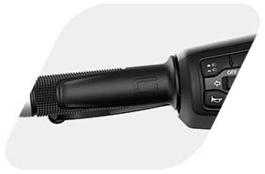
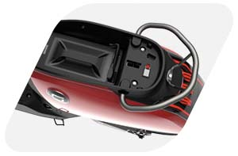

Super Soco Cux
A diversão de conduzir, aliada à mobilidade elétrica. Disponibilizamos 4 cores diferentes para escolher a que melhor se adapta ao seu estilo.
Design Moderno + Bateria íons-lítio + Motor Bosch = Diversão
Veja abaixo os recursos disponíveis na Super Soco Cux.
Motor Bosch de alto desempenho na roda traseira com torque até 115NM para aceleração rápida para alcançar uma velocidade máxima de 65KM/H, integrada com um sistema de freio a disco.
Equipada com uma bateria íons-lítio removível e recarregável permite percorrer até 70KM. (média de velocidade de condução a 45km/h para condutor de 75 kg)
3 velocidades digitais, o display LCD apresenta ao condutor informações sobre a velocidade, autonomia, temperatura e hora.

Buzina, Comandos digitais no manípulo, bloqueio de guiador, 2 espelhos e acelerador.
Comando de bloqueio remoto com sistema anti-roubo / alarme.
Mantenha a chave no bolso e dirija, graças à função Keyless Go. Trave manualmente o veículo mecanicamente para ativar a proteção anti-roubo.

Espaço isolado para bateria e armazenamento de bens, conector específico para evitar danos no cabo de carregamento.
Estrutura em aço de carbono com maior intensidade e mais leve, menos vibração, maior conforto. Passou 500.000 vezes no teste de vibração, durabilidade incrível.
Mais energia, menos consumo: controlador externo com dissipação de calor.
Soldagem TIG: processo de soldagem por Fusão que utiliza a energia elétrica, origina uma soldagem estável e um revestimento sem falhas.
Ergonomia perfeita, os pés tocam no chão. Condutores acima de 1,80m podem-se esticar livremente.